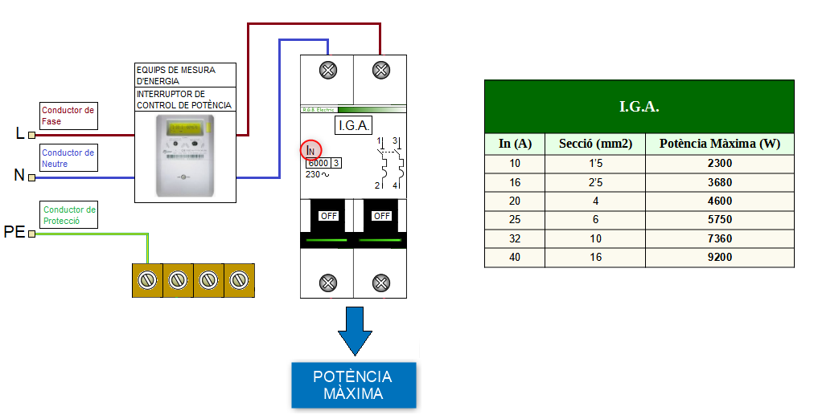
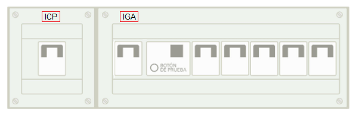

Segons el REBT ICT-BT-17, el quadre elèctric ha de tindre un Interruptor General Automàtic (I.G.A.) de tall omnipolar, que permeta l'accionament manual i que estigue dotat d'elements de protecció contra sobrecàrregues i curtcircuits superiors a 4500A.
El IGA determina la Potència màxima o nominal de la instal·lació:

El I.G.A. desconnectarà la instal·lació elèctrica quan el consum dels seus receptors elèctrics supere la potència màxima o nominal de la instal·lació (SOBRECÀRREGA).
Existeix un altre interruptor obligatori en una instal·lació elèctrica que s'anomena interruptor de control de potència (I.C.P.) i que també controla la potència elèctrica de la instal·lació. Ara bé, en aquest cas la potència a controlar és la contractada amb l'Empresa de Subministrament d'Electricitat i no la de la instal·lació. En l'actualitat aquest interruptor automàtic està integrat amb el comptador de llum. Antigament es situava dintre del quadre elèctric de la instal·lació (Veure Imatge).

La Potència contractada sempre ha de ser inferior o igual a la Potència Màxima o Nominal de la Instal·lació.
Els contactes dels tots els pols de l'interruptor automàtic queden "oberts" en posar la maneta en posició OFF.